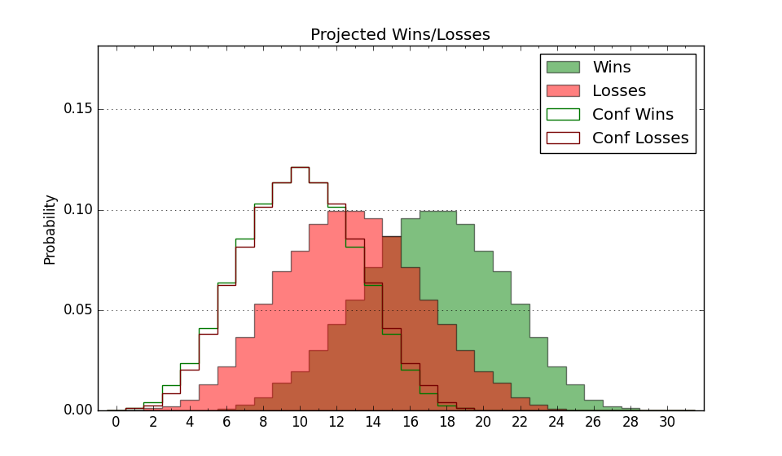

| Home | Game Probabilities | Conferences | Preseason Predictions | Odds Charts | NCAA Tournament |
| City: | Raleigh, North Carolina | |
| Conference: | ACC (1st)
| |
| Record: | 0-0 (Conf) 0-0 (Overall) | |
| Ratings: | Comp.: 10.6 (73rd) Net: -999.0 (1st) Off: 0.0 (1st) Def: 999.0 (1st) SoR: 0.0 (1st) |
| Remaining | ||||||
|---|---|---|---|---|---|---|
| Date | Opponent | Win Prob | Pred. | |||
| 11/6 | The Citadel (325) | 95.6% | W 84-62 | |||
| 11/10 | Abilene Christian (191) | 87.3% | W 82-68 | |||
| 11/17 | Charleston Southern (336) | 96.0% | W 88-66 | |||
| 11/23 | (N) Vanderbilt (70) | 48.9% | L 74-75 | |||
| 11/28 | @ Mississippi (65) | 32.1% | L 67-72 | |||
| 12/2 | @ Boston College (135) | 55.6% | W 71-69 | |||
| 12/6 | Md Eastern Shore (322) | 95.5% | W 78-57 | |||
| 12/12 | Tennessee Martin (278) | 93.5% | W 86-66 | |||
| 12/16 | (N) Tennessee (4) | 14.5% | L 62-74 | |||
| 12/20 | Saint Louis (127) | 79.9% | W 79-70 | |||
| 12/23 | Detroit (267) | 93.2% | W 86-68 | |||
| 1/3 | @ Notre Dame (175) | 63.1% | W 75-71 | |||
| 1/6 | Virginia (53) | 57.3% | W 68-66 | |||
| 1/10 | North Carolina (22) | 38.7% | L 73-76 | |||
| 1/13 | @ Louisville (159) | 59.1% | W 73-71 | |||
| 1/16 | Wake Forest (64) | 61.6% | W 79-75 | |||
| 1/20 | Virginia Tech (48) | 55.8% | W 75-74 | |||
| 1/24 | @ Virginia (53) | 28.2% | L 64-70 | |||
| 1/27 | @ Syracuse (95) | 47.1% | L 74-75 | |||
| 1/30 | Miami FL (51) | 57.1% | W 77-75 | |||
| 2/3 | Georgia Tech (111) | 77.5% | W 75-67 | |||
| 2/7 | Pittsburgh (69) | 63.7% | W 75-71 | |||
| 2/10 | @ Wake Forest (64) | 32.0% | L 74-80 | |||
| 2/17 | @ Clemson (40) | 23.0% | L 68-77 | |||
| 2/20 | Syracuse (95) | 75.2% | W 78-70 | |||
| 2/24 | Boston College (135) | 81.0% | W 75-65 | |||
| 2/27 | @ Florida St. (79) | 40.3% | L 70-72 | |||
| 3/2 | @ North Carolina (22) | 15.6% | L 68-80 | |||
| 3/4 | Duke (3) | 21.8% | L 66-75 | |||
| 3/9 | @ Pittsburgh (69) | 34.0% | L 71-76 | |||
| Previous | Game Score | |||||
| Date | Opponent | Win Prob | Result | Off | Def | Net |
| Stats & Trends | |||||
|---|---|---|---|---|---|
| Current | Day | Week | Month | Season | |
| Composite | 10.6 | -- | -- | -- | -- |
| Comp Rank | 73 | -- | -- | -- | -- |
| Net Efficiency | -999.0 | -- | -- | -- | -- |
| Net Rank | 1 | -- | -- | -- | -- |
| Off Efficiency | 0.0 | -- | -- | -- | -- |
| Off Rank | 1 | -- | -- | -- | -- |
| Def Efficiency | 999.0 | -- | -- | -- | -- |
| Def Rank | 1 | -- | -- | -- | -- |
| SoS Rank | 1 | -- | -- | -- | -- |
| Exp. Wins | 17.2 | -- | -- | -- | -- |
| Exp. Conf Wins | 9.9 | -- | -- | -- | -- |
| Conf Champ Prob | 2.2 | -- | -- | -- | -- |

| Advanced Stats | ||
|---|---|---|
| Stat | Value | Rank |
| Off Eff FG % | 0.000 | 1 |
| Off Ast Ratio | 0.000 | 1 |
| Off ORB% | 0.000 | 1 |
| Off TO Rate | 0.000 | 1 |
| Off FT Ratio | 0.000 | 1 |
| Def Eff FG % | 999.000 | 1 |
| Def Ast Ratio | 999.000 | 1 |
| Def ORB% | 999.000 | 1 |
| Def TO Rate | 999.000 | 1 |
| Def FT Ratio | 999.000 | 1 |